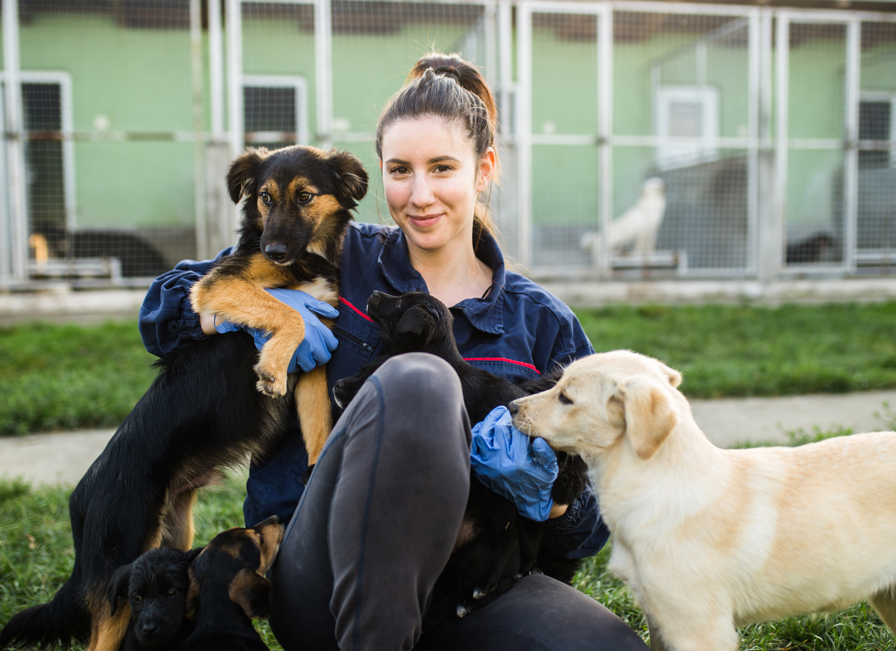
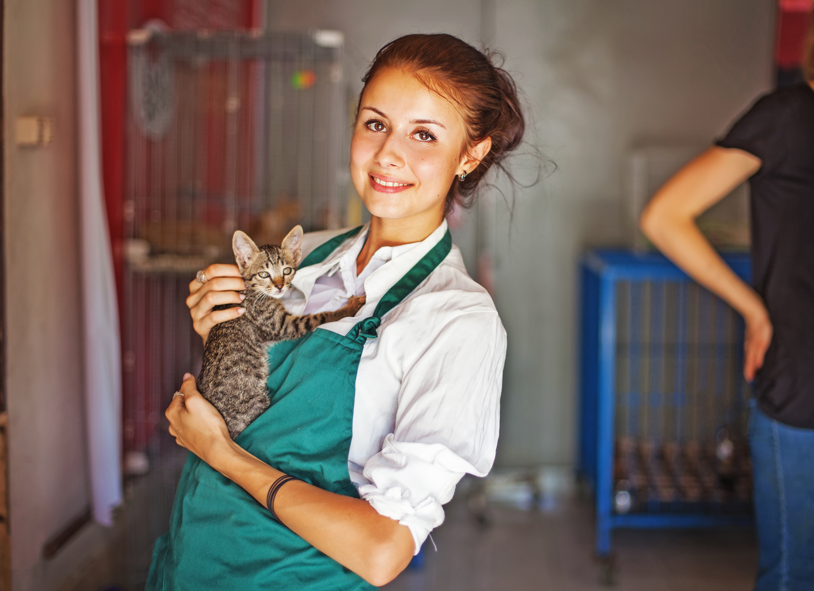
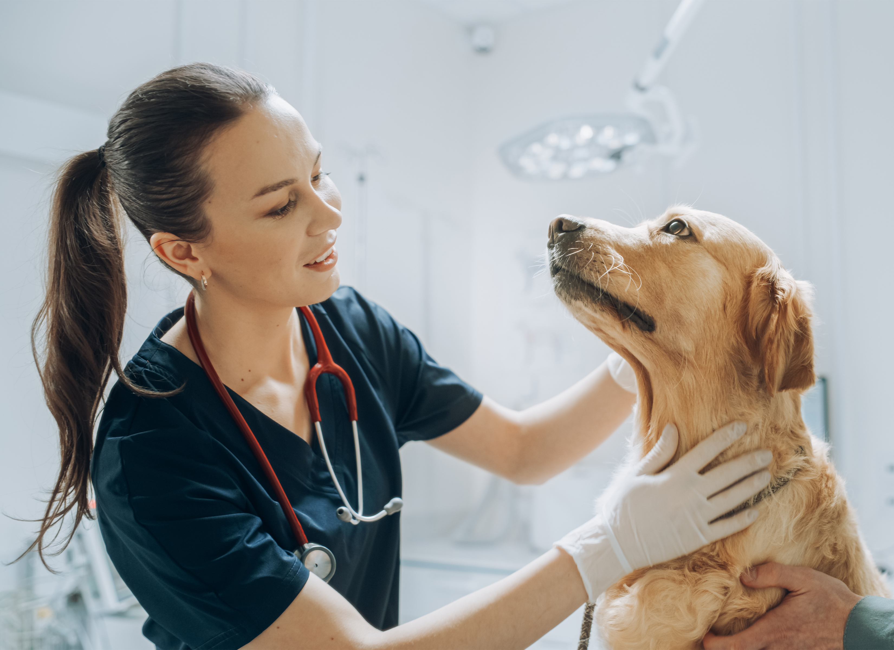

About Us
Our Story
 Safe Haven Animal Shelter began with a simple, heartfelt mission: to be a voice for the voiceless. Founded by a group of passionate animal advocates in the heart of Houston, our nonprofit was created to rescue, rehabilitate, and rehome animals who have been neglected, abused, or abandoned. What started as a small effort to make a difference in the lives of a few quickly grew into a full-scale operation, providing a safe, loving refuge for animals in desperate need. Every dog, cat, and companion that comes through our doors receives medical care, emotional healing, and a second chance at life. At Safe Haven, we believe every animal deserves a home—and we work tirelessly to make that a reality, one rescue at a time.
Our Mission
 At Safe Haven Animal Shelter, our mission is to provide compassionate care and a second chance for animals in need. We are committed to rescuing homeless, neglected, abused, and abandoned animals throughout the Houston area, ensuring they receive the medical attention, rehabilitation, and love they deserve. Our dedicated team works tirelessly to heal both physically and emotionally, preparing these animals for their forever homes. Beyond rescue, we focus on community outreach, education, and promoting responsible pet ownership to reduce the number of animals in need. Through our responsible adoption practices and advocacy, we aim to create a more humane world—one where every animal is not only safe but also valued, respected, and given the chance to thrive in a loving, permanent home. Together, we are building a brighter future for animals in our community and beyond.
What we offer
 Safe Haven Animal Shelter offers a comprehensive range of services to support both animals and the community. We provide emergency rescue and shelter for animals in crisis, along with veterinary care, spay/neuter services, and behavioral rehabilitation to prepare them for adoption. Our adoption program carefully matches each animal with a loving, responsible home, while our foster network provides temporary care for pets in need of extra support. We also offer educational resources, volunteer opportunities, and community outreach programs aimed at promoting responsible pet ownership and preventing animal cruelty. At Safe Haven, we’re more than a shelter—we’re a lifeline for animals and a resource for the people who care about them.